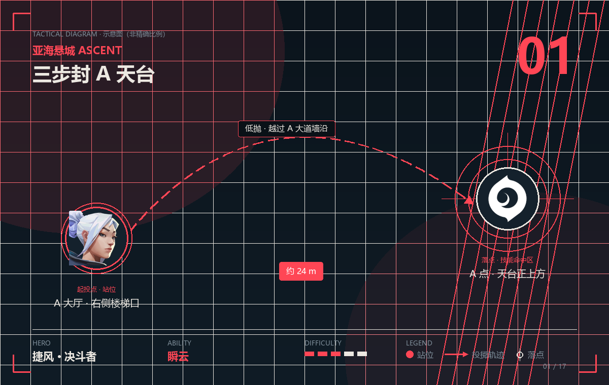

POINT 01 · 瞬云
三步封 A 天台
瞬云 · 约 24 m · 难度
- 站位
- 站在 A 大厅通向 A 大道那道门框的内侧，背贴右侧墙面。这一步的关键不是「站哪」，而是「别被中路看到」——身体要完全藏在门框投下的阴影里。
- 瞄点
- 准星抬到画面中上部约三分之一处，对准 A 大道尽头「天台护栏」与天空的交界线，然后向斜上方轻推投掷。瞬云没有弹道提示，第一颗扔完看云层边缘是不是压住护栏，第二颗再修正，两三颗就能形成肌肉记忆。
- 落点
- 云朵在 A 天台入口正上方展开，同时切断「A 天台 → A 点」和「A 天台 → A 大道」两条高台枪线，守方最舒服的架枪位被一秒抹掉。
- 时机
- 队伍第一波提速、准备从 A 大道贴脸进场时投掷。和第二颗云错开 2–3 秒，不要两颗同时炸在同一个位置——那样对面只需要等一次烟散。
提示 瞬云只有 2 秒多，属于「短烟」。投完立刻往前压 3 步占住 A 大道门框，等云散的时候你已经贴到 A 点了。